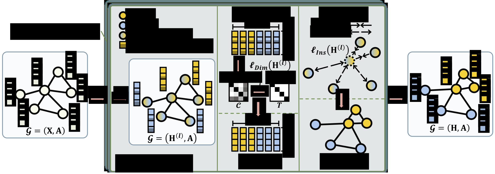
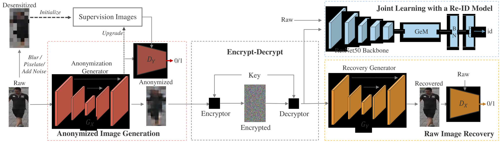
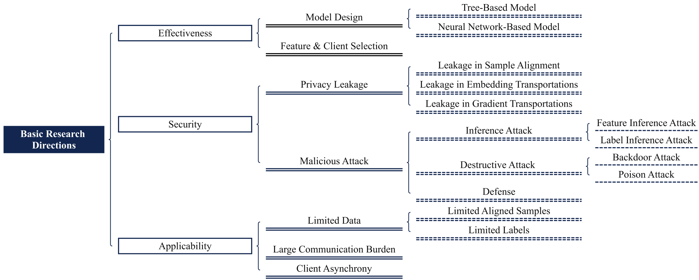

|
Wei Shen
My name is Wei Shen (沈为). I'm a master student at Wuhan University, under the supervision of Prof. Mang Ye. Before that, I obtained my B.S. degree from Wuhan University in 2023.
Email: weishen@whu.edu.cn /
Scholar /
Github
|
|
Research
My research interests include Privacy, Federated Learning, and Graph Learning. If you are interested in my works, feel free to get in touch with me!
|
|

|
Resisting Over-Smoothing in Graph Neural Networks via Dual-Dimensional Decoupling
[paper]
[codes]
Wei Shen, Mang Ye, Wenke Huang
ACM Multimedia (ACM MM), 2024
We handle oversmoothing in GNNs from both instance and dimension cues.
|
|

|
Securereid: Privacy-preserving anonymization for person re-identification
[paper]
[codes]
Mang Ye, Wei Shen, Junwu Zhang, Yao Yang, Bo Du
IEEE Transactions on Information Forensics and Security (TIFS), 2024
We propose a reversible anonymization method for person re-identifications with customized encryption.
|
|

|
Vertical Federated Learning for Effectiveness, Security, Applicability: A Survey
[paper]
[codes]
Mang Ye, Wei Shen, Bo Du, Eduard Snezhko, Vassili Kovalev, Pong C. Yuen
arXiv, 2024
We provide a literature review in VFL from Effectiveness, Security and Applicability.
|
Thanks for the template from Jon Barron's academic website.
|
|